Fvwm is a window manager for X11. It is designed to minimize memory consumption, provide a 3D look to window frames, and a virtual desktop.
— The FVWM(F? Virtual Window Manager) manual
在看这个文档之前你最好对 Xwindow 的工作机制有一定了解。知道 X server 跟 WM 有什么关系。你可以参考我的 Xwindow 网页
先说正事吧。FVWM 的老巢在http://www.fvwm.org。那里有所有源码和各种按钮，菜单样式，图标，声音，抓图，……下载。
另外，你可能想要FVWM支持鼠标动作。你可以在 http://www.etla.net/libstroke/ 得到 libstroke. 下载那个为 FVWM 准备的版本，编译后安装，然后再编译 FVWM，它一般就会找到 libstoke，从而加入 stroke 的功能。
FVWM 的问题最好到 FVWM 邮件列表讨论，那里的人们都很热情。地址见 FVWM 的主页。
并不是任何人都会喜欢 FVWM。使用 FVWM 显然不像用 KDE，Gnome 的桌面那么简单，你需要自己对它进行配置。它是一个老牌的，长久不衰的窗口管理器，它永远以一个忠实的 Xwindow 窗口管理器的方式工作。使用 FVWM，你可以学到很多有关 Xwindow 的东西，你会很快的明白 Xwindow 的工作原理，见识到 Xwindow 的强大和灵活。
如果你喜欢随意的控制自己窗口，让它们都乖乖听话，而不是老是跳出来挡在你面前。你喜欢随意定制自己窗口样式，喜欢快速高效的控制窗口，喜欢节省资源，…… 总之，你是一个挑剔的人。那么 FVWM 就是你最终的选择。
FVWM 的用户包括很多超级大拿。你猜下面这个屏幕抓图是谁的 FVWM? (点击可以放大)
FVWM 的缺省配置是非常简陋的。当我第一次看到它时，“天哪！世界上还有这么难看的窗口啊！”我立即选择了 "quit"。然后我选择了 KDE 和 Gnome。
但是当我被 KDE，Gnome 华丽的难以忍受的不稳定性烦透了时候，当我快要放弃使用 Linux 和 Xwindow 的时候，我在 Knuth 的主页上看到了他的 Linux 系统下的漂亮的 FVWM 抓图。天哪！我忽略了世界上最强大的窗口管理器。它完全可以变得比任何其它窗口管理器漂亮，它让我领悟到了 Xwindow 的魅力。它不但很强大，而且可以和 KDE, Gnome 里的程序一起工作。
这个问题是永远不会有答案的。问这个问题就像在问：“Xwindow 是什么样子的？”也许勉强可以接受的回答是：“你想让它是什么样子，它就会成为什么样子。”
FVWM 是一个完全可定制的窗口管理器。这是FVWM不同于很多其它WM的一个特点，它的一切行为方式都是由一个配置文件: .fvwm2rc 决定的。没有了这个配置文件，FVWM 就成了一个废物: 鼠标和键盘几乎不起任何作用，没有菜单，没有窗口边框，没有按钮，甚至你根本不知道它其实正在运行！
但是一旦有了配置文件，FVWM就会变得威力无比，简单的配置文件可以实现基本的功能，复杂的配置文件甚至可以模拟很多其它WM甚至 Windows XP。下面就是一个模拟 Windows XP 的例子，点击可以放大。很漂亮吧？什么时候 Windows XP 也能这么漂亮就好了 :)
下面是一个模拟 CDE 的 dtwm 的例子：
以后如果有人告诉你：“FVWM是那个样子。”你就可以对他说：“FVWM不一定是那个样子。” :)
你可以在http://www.fvwm.org/screenshots/看到很多漂亮的配置。
配置文件叫做 ~/.fvwm/.fvwm2rc, 在你的用户目录下。
配置文件有点像一个脚本语言。不要怕，这种脚本语言比起 Perl, awk 简单多了。你不需要学会编程。配置文件是在FVWM启动时读入并被FVWM执行的，你也可以在FVWM正在运行的时候与它“对话”，即时执行命令和修改界面风格。
写配置文件，一个很好的出发点就是随 FVWM 源码发行的 system.fvwm2rc 文件。它的位置现在在源码包的 sample.fvwmrc/system.fvwm2rc。你也可以在这里下载一份 2.5.4 的system.fvwm2rc. 把它拷贝到你的 ~/.fvwm/ 目录下面, 改名为 .fvwm2rc. 作为我们的起始点。
注意sample.fvwmrc/ 这个目录下还有system.fvwm2rc-sample-95这样的配置文件，它们可以模拟 Windows 95 的操作方式，但是这个配置文件太大了，不适合用来修改成为自己的配置文件，你有兴趣可以自己看看，然后把里面某些你觉得很cool的东西贴到你的配置文件里。
现在我们就来分析一下这个简单的配置文件里到底在说些什么。
一个配置文件里基本上是一些命令，与其它WM不同的是，FVWM并不区分样式命令和动作命令，你可以几乎在任何情况下使用任何命令。比如命令:
Mouse 1 A CSM Style gvim TitleAtBottom
让你在任何时候按住 Ctrl-Shift-Alt 再点击鼠标左键(编号1)，名叫gvim的窗口的标题栏就会跑到下面去。是不是很好玩？呵呵。这里 "Style" 是一个样式命令。
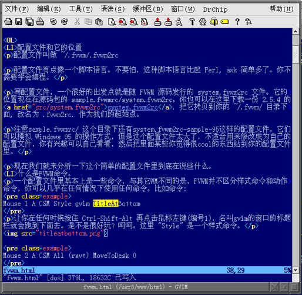Mouse 2 A CSM All (rxvt) MoveToDesk 0
按住 Ctrl-Shift-Alt 再点击鼠标左键中键(编号2)，所有的 rxvt 都会被移动到当前的桌面. 这里的 "All" 是一个可以附加条件和操作的条件动作命令，我们在后面会介绍。
实验一个命令的作用不需要重新启动FVWM，你可以先在 .fvwm2rc 里这样定义：
Key F3 A A Module FvwmConsole
然后启动fvwm, 这样你在任何时候按下 <F3> 键，就会启动一个叫做 FvwmConsole 的模块，你可以在里面输入Fvwm命令，回车它们就会执行，并且立即生效。这是直接与FVWM对话的方法。当然如果你想得到下面这么漂亮的 FvwmConsole, 还需要对 xterm/rxvt 的参数作一些设定。其实我的定义是：
Key F3 A A Module FvwmConsole -terminal rxvt -geometry 45x5-0+0 \ -bg gold -fg midnightblue \ -fn "-adobe-courier-medium-r-*-*-14-*-*-*-*-*-*-*"
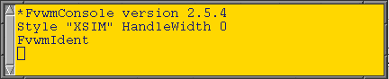
FVWM 可以有很多个虚拟桌面(desk)(几乎无穷多！)，每个虚拟桌面可以被分成很多个页("page")。这些page相当于把你的屏幕扩大了很多倍。这一行就是设定每个desk包含多少page.
DeskTopSize 这类语句指定了整个FVWM的某种行为方式，类似的语句还有很多。下面列举一些，你第一次看本文可以草草略过这一节。
如果你要启动一个X程序最好同时使用 exec, 比如
Exec exec rxvt
这样shell会执行"exec rxvt", 用rxvt替代自己的正文段，这样才不会出现很多shell在那里等待X程序返回。
ImagePath +:/usr/share/icons:/usr/share/pixmaps: $HOME/.fvwm/icons加号是表示以前定义过的那个 ImagePath. FVWM 可以使用 .xbm, .xpm 和 .png 格式的图标。
就举这些吧……我只是举出了我有时会用到的，其实还有很多很多，你看看 FVWM 的manpage就知道了。
Move, Close, WarpToWindow ...这些命令如何知道作用于那个窗口呢？如果你因为点击了窗口上的按钮，边框，……而激发了这些命令，那么这些命令就会作用于这个窗口。或者你也可以用条件选择命令确定一个或者一批窗口进行操作，见条件命令。否则，这些命令不知道应该作用于哪个窗口，比如你在 FvwmConsole 里键入 "Close", Close 命令就没有窗口上下文，它缺省会出现一个“+”状的选择器让你选择一个窗口。如果你不希望命令在没有窗口上下文的时候自动让你选择一个窗口，那么你可以在命令前面加上 "Silent".
FVWM几乎可以以无穷的方式组合，来进行鼠标和键盘的操作。你还可以加入窗口上下文来进行更方便的动作。
键盘操作的定义：
Key Keyname Context Modifiers Function
它表示：在名叫 Keyname 的键在 Context 上下文按下时，如果控制键 Modifiers 组合按下，那么执行 Function. 键盘操作后面的部分跟鼠标一样的含义，我们下面只用鼠标操作来一起说明这些命令的用途。
鼠标操作的定义：
Mouse Button Context Modifiers Function
它表示：在鼠标编号为 Button 的键在 Context 上下文按下时，如果键盘控制键 Modifiers 组合按下，那么执行 Function.
鼠标键编号的方法是：1 左键，2 中键，3 右键。如果你的鼠标有轮子，那么一般4表示往上滚动，5表示往下滚动。
Context是鼠标按下的位置，它可以是：
这些上下文可以组合。比如 "FST" 表示在frame, sidebar, 或者 title.
Modifiers 是鼠标操作时同时的键盘控制键。M 表示 "Meta"，在PC上就是Alt，S: shift, C: ctrl. 还有 A: any, N: none. 也可以组合，比如"MS" 表示同时按下Alt-Shift.
Function 就是任意的FVWM操作了，可以是一个直接的命令，也可以是一个 FVWM 函数。
现在我们分析一下下面这个定义：
Mouse 3 W SC CloseOrNot这个定义是说，在窗口上点击鼠标右键，并且先按下 Shift-Ctrl，那么调用 CloseOrNot 这个FVWM函数。这个函数会作用与当前鼠标所在的上下文，也就是一个窗口。函数是这样定义的：
DestroyFunc CloseOrNot AddToFunc CloseOrNot + C Silent Close + M Nop
你可以把一系列的操作有条件的加入到一个叫做“函数”的结构里，以后这个函数就可以像命令一样被使用了。
AddToFunc 把动作附加到函数, 如果函数不存在就先创建这个函数。除了第一行，后面的行都以一个"+"号开头，这说明以下是上一个命令(AddToFunc)的继续。DestroyFunc 是为了消除以前有可能定义过的函数体。这个函数 CloseOrNot 表示:
在 FVWM 启动和重新启动时都会调用 StartFunction, 而且在首次启动时会调用 InitFunction, 在重新启动时会调用 RestartFunction， InitFunction 和 RestartFunction 都是在 StartFunction 之后调用。每次重起和完全退出时都要执行 ExitFunction.
如果你有什么程序需要在FVWM启动时启动，那么就把它加到合适的函数里面去。比如，我的配置文件有这些内容：
DestroyFunc StartFunction AddToFunc StartFunction + I Module FvwmButtons MainPanel + I Module FvwmAuto 500 Raise Nop + I Module FvwmAnimate + I Module FvwmTaskBar + I Exec exec xdaliclock + I Exec exec xloadimage -onroot -fullscreen ~/pic/cat_20.jpg + I Exec exec xsim DestroyFunc InitFunction AddToFunc InitFunction + I Exec exec xscreensaver -no-splash DestroyFunc ExitFunction AddToFunc ExitFunction + I All (xdaliclock) Close + I All (xscreensaver) Close + I All (xsim) Close
可见，我在第一次启动时会启动 xscreensaver 屏幕保护程序。-no-splash 是 xscreensaver 的参数。在每次重新启动和第一次启动时都要运行 FvwmButtons, FvwmAuto, FvwmAnimate, FvwmTaskBar 几个模块和 xdaliclock，一种 morph 数字的时钟，然后用 xloadimage 放一张漂亮的图片作为桌面背景，最后启动 xsim 中文输入法。
退出和重起时，我特意关闭了那几个启动时打开的程序，因为如果不关闭他们，像 xwin32, Exceed 这样的 Windows X server 不会 Reset.
每个命令前的 "I" 表示 Imediately, 立即执行，联想上面提到的 "C" 和 "M", 这个操作不等待任何鼠标动作。
Style 语句用于设定窗口的样式。你可以随心所欲的让不同的窗口有不同的样式。语法为:
Style stylename options
其中stylename是你的窗口的名字，窗口的class名字，或者窗口的resource名字。如果你不知道这些 X window 的术语，那现在就姑且当作窗口的名字好了，以后多看看 Xlib 的说明书你就会明白这些东西。窗口的名字有可能不同于程序的名字，你不知道它叫什么名字可以用 xwininfo 程序或者 FvwmIdent 模块来查询。再次说明，FvwmIdent 是模块，不能从 xterm 的命令行运行。
stylename 里可以有 "*" 作为通配符。比如你可以说
Style *term TitleAtLeft让所有以 "term" 结尾的那些窗口的标题拦都在左边。比如 "xterm", "cxterm", "qterm", ... 都会采用这种样式。
options 是你想让满足条件的窗口以什么样的方式存在。options 的种类非常之多。比如：BorderWidth, HandleWidth, FocusFollowsMouse, TileCascadePlacement, ... 它们有的需要参数，比如 BorderWidth 7, 指定边框宽度为7个像素。有些不需要参数，比如 FocusFollowsMouse/ SloppyFocus/ NeverFocus/ ClickToFocus 指明了几种互相排斥的键盘聚焦方式。 先举几个例子，这些都是 system.fvwm2rc 里的内容：
Style * FocusFollowsMouse Style * TileCascadePlacement Style "Fvwm*" NoTitle, Sticky, WindowListSkip Style "Fvwm*" BorderWidth 2, CirculateSkipIcon, CirculateSkip Style "FvwmPager" StaysOnTop Style "FvwmBanner" StaysOnTop Style "FvwmButtons" Icon toolbox.xpm, ClickToFocus
开头的两行说明所有窗口，都是鼠标移进去的时候得到键盘聚焦，鼠标移出来就失去聚焦(FocusFollowsMouse)，窗口出现的时候，先试图找一个可以放下它而不挡住其它窗口的地方，如果不行再采用层叠放置的方式(TileCascadePlacement)。
下面是说明所有名字以 "Fvwm" 开头的窗口(在这里一般都是 FVWM 内部的模块)，它们都没有标题栏(NoTitle)，而且是sticky，也就是说即使桌面切换，它们也一直显示在屏幕上，边框宽度为 2， CirculateSkip 说明当FVWM要求轮询窗口进行批量操作时，这些窗口不被计算在内。第3,4行说明 FvwmPager, FvwmBanner 这两个模块一直显示在最上面。最后一行说明 FvwmButtons 模块使用 toolbox.xpm 的图标，需要鼠标点击才能得到键盘聚焦(ClickToFocus)。
总的说来，options指出了控制窗口的基本样式和政策，而不包括窗口各个部件具体的样式，它包括以下几个方面内容：
以上每项都包含许许多多可以设定的东西。具体还是请参考 fvwm 的manpage。
一个窗口管理器怎么能没有菜单？FVWM的菜单是可以随意自己定义的，它在任何时候出现在你想让它出现的任何地方。一个菜单首先有一个定义，然后有一个激发这个菜单的条件，菜单的样式也可以随意定制。如果使用 PipeRead 命令和一些 shell 命令组合，你就可以用菜单的方式遍历你的文件目录树，成为一个“菜单式file manager”。
菜单是由AddToMenu命令定义的，比如这样一个菜单
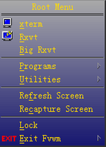
是这样定义的
DestroyMenu RootMenu AddToMenu RootMenu "Root Menu" Title + "&xterm%mini.display.xpm%" Exec exec xterm + "&Rxvt%mini.monitor.xpm%" Exec exec rxvt + "&Big Rxvt" Exec exec rxvt -geometry 78x43 + "" Nop + "&Programs" Popup ProgramsMenu + "&Utilities" Popup Utilities + "" Nop + "Re&fresh Screen" Refresh + "Re&capture Screen" Recapture + "" Nop + "&Lock" Exec exec xscreensaver-command -lock + "&Exit Fvwm%mini.exit.xpm%" Popup Quit-Verify
除了第一行，后面的行都以一个+号开头，这说明以下是上一个命令的继续。这样我们定义了一个菜单，它的名字叫 "RootMenu", 它有一个标题叫"Root Menu", 里面有一些程序。当我们选中 "XTerm" 时，会使用FVWM 的 Exec 命令启动一个shell，这个shell马上会执行"exec xterm", 也就是启动一个 xterm。空字串"" 表示在菜单里画一条分隔线。Popup 可以弹出子菜单，子菜单也是用同样的方法定义的。"&"后面的那个字母会变成键盘的热键而被加上下划线，"%"括起来的是图标文件的名字，你需要设置 ImagePath 指向图标文件所在的目录。你还可以在菜单里加入侧面图标，等等等等。
随后的AddToMenu命令会把内容附加到菜单的末尾。所以如果你想重新定义一个菜单，就需要先把它销毁掉。用
DestroyMenu RootMenu就可以把刚才那个 "RootMenu" 菜单消灭掉。
光是定义了一个菜单你是不能马上使用它的。这个菜单在什么情况下出现？这个问题是需要你自己来决定，这也是显示FVWM的完全可定制性的地方。比如，我们可以这样定义一个激活菜单的方式：
Mouse 1 R A Menu RootMenu Nop
这句话的意思是：“当鼠标(Mouse)左键(1)在根窗口(R)上点击，同时有任何控制键(A)按下，这个时候显示叫做 RootMenu 的菜单。”
但是有时候我们不容易在屏幕上找到一个可以看到根窗口的地方来点击鼠标。我们可以再加一个定义：
Mouse 3 A MC Menu RootMenu Nop
这样，当右键(3) 在任何地方(A)点击, 同时有Alt(M)和Ctrl(C)按下，那么弹出名叫 "RootMenu" 的菜单。
上面的 "Nop" 表示的是鼠标在菜单上进行双击时的操作。我定义为不操作。另外 Menu 还可以随意定义菜单出现的位置，详细请看 fvwm manpage。
菜单的样式是由 MenuStyle 定义的：
MenuStyle * MWM MenuStyle * PopupDelayed, PopupDelay 160, Animation, TitleWarp MenuStyle * Foreground gold, Background gray40 MenuStyle * ActiveFore White MenuStyle * Font -*-simsun-medium-r-*-*-14-*-*-*-*-*-*-* MenuStyle * MenuFace VGradient 64 darkgray MidnightBlue
这样我规定：所有的菜单，他们使用 mwm 的行为方式，弹出子菜单延时 160 ms，子菜单弹出时如果靠近屏幕边沿放不下，那么菜单整体移动使得子菜单刚好能弹出，前景色gold，背景色 gray40, 活动的项目(就是鼠标正在它上方的时候)前景色变为白色，菜单使用字体 -*-simsun-medium-r-*-*-14-*-*-*-*-*-*-*, 背景是垂直的梯度颜色，一共64阶，从 darkgray 变化到 MidnightBlue.
前面我们说过了，可以用 PipeRead 来构造一个动态菜单。现在举一个简单的例子：
AddToMenu HomeDirMenu PipeRead 'for i in $HOME/prog/*.c; \ do echo "+ $i Exec xterm -e vi $i"; done'
当你激发这个菜单 HomeDirMenu, 就会出现你主目录/prog下的所有C程序文件的列表，当你点击其中一个就会启动vi来编辑这个C程序。是不是很方便呢？你想一想，可以用怎样无穷无尽的方式来构造一个菜单呢？
窗口的标题栏上都有一些按钮。那不是窗口程序自己的，而是WM给它们加上的。
FVWM 可以给窗口加上最多10个按钮，它们不光可以实现基本的最大化，最小化，关闭，等功能。FVWM的灵活性允许你赋予按钮几乎任意的功能！
按钮是这样编号的：
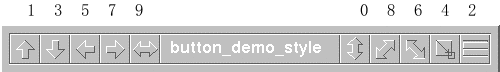
左边是奇数右边是偶数, 外面的大中间的小。
下面看看按钮的功能是怎么定义的，在鼠标和键盘一节我们已经知道怎么定义鼠标了，按钮的功能只不过是把鼠标与按钮号码组合在一起。
比如我的窗口上一般有三个按钮, 都在右上角，注意它们的编号：
6 4 2
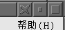
他们的功能是这样定义的：
Mouse 1 4 A Iconify Mouse 1 6 A Close Mouse 3 2 A Maximize-Func2其中 Maximize-Func2 是用了 system.fvwm2rc 里一个函数：
DestroyFunc Maximize-Func2 AddToFunc Maximize-Func2 "M" Maximize 100 0 + "C" Maximize 80 0 + "D" Maximize 100 100
如果鼠标右键在“最大化”按钮上点击(C)那么高度增长为屏幕的 80%, 宽度不变。如果按下鼠标右键后有拖动(M), 那么高度增长为屏幕高度(100%), 宽度不变。如果双击(D), 就是一般的最大化。
为什么是右键？因为我为左键在这个按钮上定义了更高级的 stroke 来改变窗口大小。我们稍后介绍。
按钮的样式是用ButtonStyle定义的。比如我的那三个按钮实际上是如下几句话定义的。
ButtonStyle All -- UseTitleStyle ButtonStyle All ActiveDown VGradient 8 palevioletred black ButtonStyle 6 16 20x20@1 30x20@1 50x40@1 70x20@1 80x20@1 80x30@0 \ 60x50@0 80x80@0 70x80@0 50x60@0 30x80@0 20x80@0 \ 20x70@0 40x50@1 20x30@0 20x20@1
右边两个按钮的图案是系统缺省的，那个"X"形按钮是下面第三句话画出来的。 这种绘图语句非常简单。ButtonStyle 之后的数字是按钮编号，后面一个数子表示一共有多少笔画。后面的XxY@C都是笔画的内容，XxY是坐标, 坐标都是用百分比表示的。@C 表示颜色, C是一个数字，0 表示阴影色，1 是高亮色，2 是背景色，3 是前景色，4 是移动光标而不画线。
你可以画你自己的按钮，也可以去拿别人设计好的来用。FVWM 的主页上有很多人提供这种按钮。
第二个语句 "ActiveDown VGradient 8 palevioletred black" 设定了所有按钮按下去还没有松开鼠标时候的样式，是一个颜色梯度。
我们已经知道 Style 可以决定窗口的样式，MenuStyle 可以决定菜单的样式，ButtonStyle 按钮的样式。其实还有 CursorStyle, TitleStyle, BorderStyle. 他们决定了光标，标题栏，边框的样式。他们都有多样的语法，详细的就看 magpage 吧。这里就不照抄了。
All, Any, Cond, Current, Direction, Next, None, Pick, WindowId, ... 这些命令是条件选择窗口的办法，它们让你可以用非常多样的方法，来确定你的操作需要对哪一个或者哪些窗口进行。比如：
All (Iconic) MoveToPage -1 -1把所有图标化的窗口都移动到桌面右下角的那一页。
Key F5 A A Direction North Maximize True 0 growdown
以后按 F5 就可以让当前聚焦窗口上面(North)那个窗口往下长大，直到被当前窗口挡住去路。你有时候想在VIM里抄 Acrobat Reader 里的内容，安排窗口大小的时候就可以用这招。
你用过 EDA 软件吗？ 用过的话，你就可以知道鼠标动作(stroke)是多么的方便！ 你是否想在你的窗口管理器里也使用鼠标动作？
如果你的FVWM窗口管理器编译进了 libstroke, 你就可以使用鼠标动作操纵程序。libstroke 是一个免费使用的 stroke 库，你可以在 http://www.etla.net/libstroke/ 得到 libstroke. 下载那个为 FVWM 准备的版本，编译后安装，然后再编译 FVWM，它一般就会找到 libstoke，从而加入 stroke 的功能。
比如我在屏幕上按住 ctrl, 用右键
当然这些控制方式都是你自己决定的, 这一切只需要在 .fvwm2rc 里加入一些Stroke语句. 因为太多了，写在主配置文件影响编辑, 这些语句被我写到了另一个文件里，然后在主文件用 Read 语句读入。你可以在这里下载我的fvwm.stroke文件作为参考。
你还可以定义非常高级的操作，你甚至可以这样：按住 ctrl, 用鼠标中键画出一条射线箭头指向的那个窗口, 不论它在那个桌面，就会被吸过来，并且随鼠标移动，你点击左键就可以放置它。
stroke 的原理很简单，libstroke 可以识别出你在屏幕上画出的轨迹，把它报告给FVWM，这样FVWM根据轨迹的不同采取不同的操作。轨迹是由一个电话拨号盘的方式确定的。也就是说，把你画出的东西分成9个区域，看你的鼠标依次经过那几个区域。
1 2 3
4 5 6
7 8 9
轨迹也可以用你的小键盘上的数字键来确认。看看你的小键盘：
7 8 9
4 5 6
1 2 3
在你的配置文件里写入一些 Stroke 语句：
Stroke Sequence Button Context Modifiers Function比如：
Stroke N7414789 0 A C Exec exec rxvt Stroke N7414759 0 A C Exec exec rxvt Stroke N74147589 0 A C Exec exec rxvt Stroke N7414756 0 A C Exec exec rxvt Stroke N74156 0 A C Exec exec rxvt Stroke N74159 0 A C Exec exec rxvt
Stroke 关键字之后跟上轨迹说明。轨迹是一系列数字，如果数字前面有一个"N", 就表示我们采用小键盘的布局，而不是电话拨号盘。你看我的那几个轨迹，实际上是我们在写 "r" 字母的时候有可能出现的几种情况。
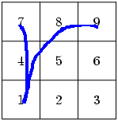
比如，这个轨迹就是符合 "N7414589".
轨迹之后是鼠标按键号码。如果号码不是0，那么一旦识别到这个轨迹，就会马上执行操作。但是如果号码是0，那么说明这个定义不是在任何时候识别到就马上进行的。而是当 StrokeFunc 命令被调用的时候才进行。StrokeFunc 为你提供了更多的灵活性。
号码之后是 Context Modifiers Function. 他们跟 Mouse, Key 的那两个同名参数是一个意思，参看 鼠标和键盘.
如果你的鼠标号码是0. 那么当 StrokeFunc 被调用的时候，这个轨迹如果被识别，就会执行相应的操作。比如：
#Drag mouse 1 on the maxmize button Mouse 1 2 N StrokeFunc DrawMotion现在看到了? 这就是我的最大化按钮上对鼠标左键的绑定。DrawMotion 是 StrokeFunc 的一个可选参数，它可以让轨迹在屏幕上被画出来，这样你可以清楚的看到你到底写了什么。
我有如下的一系列 stroke 定义：
#grow horizontal and vertically Stroke N258 0 TSF2 N Maximize True 0 growup Stroke N852 0 TSF2 N Maximize True 0 growdown Stroke N456 0 TSF2 N Maximize True growright 0 Stroke N654 0 TSF2 N Maximize True growleft 0 #grow bidirectional Stroke N25852 0 TSF2 N Maximize True 0 grow Stroke N5852 0 TSF2 N Maximize True 0 grow ........ #reverse to unmaximized Stroke N74123 0 TSF2 N Maximize False
我的鼠标左键按下“最大化”按钮之后可以进行绘画，然后窗口会随着轨迹的不同而采取各种各样的改变大小的行动！
我还有一个定义：
Mouse 3 TSF N StrokeFunc DrawMotion这样鼠标右键在窗口标题栏，边框，frame 上绘画时也会触发 StrokeFunc 函数，达到跟左键在“最大化”按钮上绘画同样的效果。发现了吧？StrokeFunc 为我省去了重复的轨迹定义，否则我需要为“左键+最大化按钮”和“右键在边框”定义两套 stroke.
我们来分析一种可能的执行情况：用鼠标左键按下“最大化”按钮(2)，然后向右画。就像这个样子：
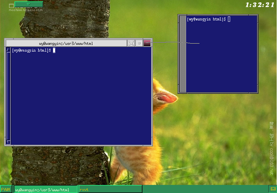
当鼠标左键在“最大化”按钮(2)上按下之后，如果没有键盘控制键按下(N)，而那么根据"Mouse 1 2 N StrokeFunc DrawMotion", FVWM就会发现应该调用 StrokeFunc.
StrokeFunc 会马上记录鼠标按下的时候有哪些控制键按下了，现在是没有控制键(N).
然后它发现鼠标随即向右画出了一条线，看看你的小键盘，这是N456。StrokeFunc 就会在已经定义的 Stroke 里去找，是否存在这样的一个定义，它的前面部分是
Stroke N456 0 2 N ...它发现有一个
Stroke N456 0 TSF2 N Maximize True growright 0
它的 Context: TSF2 包含了标题栏按钮2。鼠标动作开始时没有控制键按下，而这个项目的Modifiers里也是N. 那么这是一个符合的项目。所以进行操作 "Maximize True growright 0"：把窗口向右扩大，直到被另一个窗口或者屏幕边沿挡住。
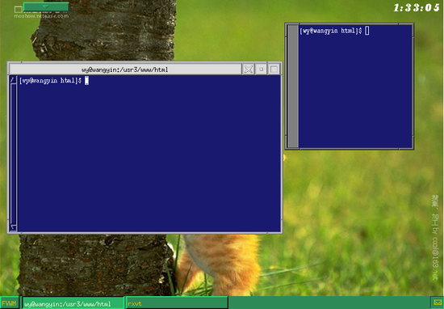
注意控制键都是在动作开始时就已经记录下来了。如果你在绘画的途中放开了或者按下了控制键是不会改变识别的效果的。
通常不要定义太复杂的轨迹，因为变化太多了就不容易识别。左右晃一晃，上下摇一摇，转个圈儿，……已经可以完成你很多任务了。
如果是复杂的 stroke, 比如写一个字母，你需要定义很多相似的 stroke，否则有时不能匹配。如果你不能确定会出现那些轨迹，你可以给 StrokeFunc 一个参数，比如：
Mouse 1 2 N StrokeFunc EchoSequence
然后你在屏幕上多画几次你的那个字母，无论它是否匹配一个定义，FVWM 会在启动它的那个终端输出你画出的轨迹号码。那些就是你写这个字母时有可能出现的轨迹，你把这些序列都加到你的配置文件，这样就提高了识别率。
注意这个输出号码的终端很有可能是 tty1，在Linux下你需要Ctrl-Alt-F1切换到tty1才能看到输出。如果你不喜欢这么麻烦，你可以在启动X的时候只启动一个 xterm, 然后在这个 xterm 里面启动 fvwm.
stroke 也可以由键盘来触发。比如：
Key F6 A C StrokeFunc DrawMotion NotStayPressed
按下 Ctrl-F6 之后，FVWM就会调用 StrokeFunc, 由于我们设定了 NotStayPressed 参数，绘画一直会延续到一个鼠标键按下的时候才结束。这时你就可以用鼠标移动画出一个轨迹，然后按一下鼠标。
模块是FVWM可以扩展的奥秘。模块是通过管道跟FVWM通信的程序，它们必须由FVWM启动(fork). 也就是说，你可以从 FvwmConsole 来启动这些模块，也可以用菜单，鼠标，热键……来启动。但是就是不能从 xterm 或者 rxvt 敲入命令来启动它们。
AddToFunc StartFunction + I Module FvwmAuto 500 Raise Nop其实你还可以用 FvwmAuto 实现非常复杂的自动提升功能。
*FvwmAnimate: Delay 25 *FvwmAnimate: Effect Random *FvwmAnimate: Width 3这些行是对 FvwmAnimate 的配置，模块的配置命令都是 "*" 号开始的。
既然 fvwm 有很多工作区。能不能有一个东西可以方便的看到那些工作区上有哪些程序，而且可以方便的切换工作区呢？FvwmPager就是为这个目的设计的。 我的Pager是这个样子：
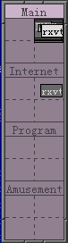
FvwmPager有很多可以设定的参数，现在你可以试试这个简单的配置，这就是上面这个 pager 的配置。
*FvwmPager: Rows 4 *FvwmPager: Columns 1 *FvwmPagerBack #908090 *FvwmPagerFore #484048 *FvwmPager:Font -*-simsun-medium-r-*-*-14-*-*-*-*-*-*-* *FvwmPagerHilight #cab3ca *FvwmPagerLabel 0 Main *FvwmPagerLabel 1 Internet *FvwmPagerLabel 2 Program *FvwmPagerLabel 3 Amusement *FvwmPager:SmallFont -*-simsun-medium-r-*-*-12-*-*-*-*-*-*-* *FvwmPagerBalloons All *FvwmPagerBalloonBack Yellow *FvwmPagerBalloonFore Black *FvwmPager:BalloonFont -*-simsun-medium-r-*-*-14-*-*-*-*-*-*-* *FvwmPagerBalloonYOffset +2 *FvwmPagerBalloonBorderWidth 1 *FvwmPagerBalloonBorderColor Black这些行是对 FvwmPager 的配置，模块的配置命令都是 "*" 号开始的。 在 FVWM 里启动它:
Module FvwmPager 0 3
上面的Pager不错吧？不过它总是在屏幕上占那么一块位置，有没有办法让它可以在需要的时候才伸出来呢？你可以用 FvwmButtons 把FvwmPager包装起来实现这个功能。
这里是我的一个简单的配置：
*FvwmButtonsBack bisque3 *MainPanel: Geometry 80x18+40+4 *MainPanel: Back SeaGreen *MainPanel: (Panel(down, indicator, delay 0, steps 1) \ PagerPanel "Module FvwmButtons PagerPanel") *MainPanel: Font -*-simsun-medium-r-*-*-16-*-*-*-*-*-*-* *PagerPanel: Geometry 80x352 *PagerPanel: (Swallow FvwmPager "Module FvwmPager 0 3") *PagerPanel: Font -*-simsun-medium-r-*-*-16-*-*-*-*-*-*-*这个FvwmButtons设置了一个 button 叫做 "MainPanel". 你可以用：
Module FvwmButtons MainPanel来启动它. 它启动时是这个样子：
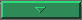
挂在屏幕左上偏右一点的地方，既没有挡住左边的按钮，又不会挡住窗口的下拉菜单。点一下就会展开，展开以后就是这个样子：
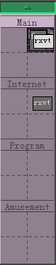 再点就会缩回去。
FvwmButtons 可以提供的功能远远不止这些。FvwmButtons 是一个非常强大的模块。你有兴趣可以看看它的 manpage.
这一节来看看我遇到过的一些问题。
不熟悉Xwindow的人经常问这种问题。答案是FVWM确实不能设置复杂的高清晰图片作为背景，但是你却可以用图片作为背景。原因是：设置背景根本不是WM的职责，你需要用其它程序，比如 xloadimage, xv, ... 在根窗口上放置一幅图片，那就是所谓的“桌面背景”。你可以把它加入你的启动函数，一个 xloadimage 的例子可以在上面看到。
你又问到一个容易混淆的问题。锁定屏幕也不是WM必须有的功能。几乎所有WM都是调用另外一个程序，比如 xscreensaver 来锁定屏幕和提供屏幕保护，然后在它们的菜单里加入对 xscreensaver 配置程序 xscreensaver-demo 的调用。看起来好像是WM提供了屏幕保护功能，让很多用户模糊了WM的职责。
你可以把 xsreensaver 加入到FVWM的启动函数里。参看启动函数和退出函数.
FVWM当然能显示汉字了，它是一个国际化的程序。原因在于你没有设置好汉字字体。你可以在配置文件里加入汉字字体的设定：
Style * Font -*-simsun-medium-r-*-*-14-*-*-*-*-*-*-*simsun 是我机器上一种同时可以支持汉字和英语编码的字体，如果你的字体只有汉字编码，那么你的英文全部都会“乱码”，这时你需要在后面再加一个英文字体。比如：
Style * Font "-cjacker-magicsong-medium-r-*-*-14-*-*-*-*-*-gb2312.1980-0,*-r-*"
类似的，pager，windowlist 都有自己的字体设定，你需要把它们都设置为你喜欢的中文字体。
另外，据说 FVWM 2.5 以前的版本对汉字支持不好。我没有用过 2.4.x，不知道怎么解决。如果你遇到这个问题就升级到 2.5.x 吧。
有。启动 FvwmTaskBar 模块就行了。你还可以把它配置的非常漂亮。这里给出一个我的 简陋的配置方案。
Style FvwmTaskBar HandleWidth 0, BorderWidth 0 *FvwmTaskBar: UseSkipList *FvwmTaskBar: AutoStick *FvwmTaskBar: DeskOnly *FvwmTaskBar: Action Click1 DeiconifyRaiseAndFocus *FvwmTaskBar: Action Click2 Iconify On *FvwmTaskBar: Action Click3 Lower *FvwmTaskBar: MailCommand Exec exec rxvt -e mutt *FvwmTaskBar: 3DFvwm *FvwmTaskBar: StartName FVWM *FvwmTaskBar: StartMenu RootMenu *FvwmTaskBar: Font -*-simsun-medium-r-*-*-14-*-*-*-*-*-*-* *FvwmTaskBar: SelFont -*-simsun-medium-r-*-*-14-*-*-*-*-*-*-* *FvwmTaskBar: ShowTips *FvwmTaskBar: ClockFormat *FvwmTaskBar: WindowButtonsRightMargin 20 *FvwmTaskBar: Back seagreen *FvwmTaskBar: Fore gold2 *FvwmTaskBar: FocusFore cornsilk *FvwmTaskBar: IconBack darkgreen *FvwmTaskBar: IconFore white
另外，FvwmButtons 模块提供了更加复杂的功能。你可以把很多小程序(xclock,biff...)和模块(FvwmIconMan)嵌入到它里面。形成一个复杂的工具条。详情请 man FvwmButtons。你也可以使用 KDE 的 kicker 工具条和 Gnome 的 gnome-panel. 请看后面。
能。把这行加入 .fvwm2rc:
Key Tab A M WindowList Root c c NoDeskSort这个绑定不知道什么时候好像成了 FVWM 缺省的。如果你不喜欢，那么加入：
Key Tab A M -取消这个定义。
FVWM 缺省的聚焦方式是 MouseFocus，也就是说，鼠标如果移动到哪个窗口，那个窗口就得到键盘聚焦。如果你想用 Windows 那样的需要点击鼠标才聚焦，那么你可以用 ClickToFocus 方式：
Style * ClickToFocus, ClickToFocusPassesClick
缺省的 MouseFocus 方式不会在点击时提升窗口。如果你想点击窗口时提升它，那么加入配置：
Style * MouseFocusClickRaises
你需要使用 FvwmAuto 模块。把 FvwmAuto 加入你的起动函数：
AddToFunc StartFunction + I Module FvwmAuto 500 Raise Nop
把这行加到你的配置文件就行了：
Style "AcroRead" VariablePosition, VariableUSPosition
把这行加到你的配置文件就行了：
Style "Display" RaiseTransient LowerTransient StackTransientParent Style "Gimp" RaiseTransient LowerTransient StackTransientParent
这是 XSIM 的一个 bug, 它设置了状态窗口的 OverrideRedirect 属性以至于没有窗口管理器能够管理它。我已经帮助修正了这个 bug。你只需要在 plugins/StatusPanels/std/statuspanel_std.cpp 的
TWstring * TStatusPanel_STD::create(Obj_Config * conf, Status_Pack * sp)
函数末尾 return NULL; 之前加入以下两行：
wa.override_redirect = False; set_winattr(CWOverrideRedirect, &wa);
问题就已经解决了。
如果你还不满意，你想让 FVWM 可以设定 xsim 的样式，那么你可以把这个函数中设置 OverrideRedirect 的那几行代码去掉。
/* XSetWindowAttributes wa; wa.override_redirect = True; set_winattr(CWOverrideRedirect, &wa); */自己设置它的属性。我们可以给它边框，也可以不给它边框。你可以把这些配置写到你的 .fvwm2rc 得到一个比较好的效果。
Style "XSIM" Layer 7, NoTitle, HandleWidth 1, Sticky, WindowListSkip
注意如果去掉了 OverrideRedirect 属性，在某些不能随意定制窗口样式的窗口管理器里，状态窗口会被包上厚重的标题栏和边框！
你可以试试 fcitx 输入法服务器。我现在换用这个了。我觉得比 XSIM 好用。直接安好就可以了，没有以上问题 :)
KDE 和 Gnome 都是完整的桌面系统，包括了WM和其它很多东西。FVWM 只是一个WM。FVWM可以替代 KDE 缺省的 kwin，或者 Gnome 缺省的 sawfish 成为它们的WM。
很多时候 Gnome 和 KDE 的程序是跟他们的桌面系统可以分开使用的。其实你有可能只需要它们漂亮的panel。
Gnome 的工具条叫做 gnome-panel, 在 xterm 启动一个就行了。
KDE 的工具条叫做 kicker. 注意 KDE 有些程序需要 dcopserver, 你可以先启动 dcopserver。
KDE 和 gnome 的panel上的pager和fvwm的FvwmPager都是相通的，所以你可以用它们任何一个来切换桌面 :)
如果你在kde的任务条用右键选择“总在最前”可能不起作用，因为现在它们得完全听fvwm的话不过你可以给它们额外的权力，请参考fvwm manpage 的有关EWMH 的部分
还有些kde程序不知道用了什么通信方式，启动后就dump了。你可以用 startkde 来启动整个 KDE 系统。一般来说它们都可以与fvwm一起很好的工作。
Gnome 的启动命令叫做 gnome-session. 它也可以完全与 fvwm 一起工作。
这样你就可以用 fvwm 的方式来控制所有桌面系统的窗口了。嘿嘿
你甚至可以让 Gnome 和 KDE 同时出现。不过估计除了耍酷，没人会像这样做:
很多即时战略游戏都可以对士兵等进行分组 比如选定一组士兵后按 Ctrl-Alt-1，可以把一组士兵标记为第1小分队 以后按 Ctrl-1 就可以让这些士兵待命。
其实FVWM可以很容易把一些窗口当成士兵。只要把这些行加入 .fvwm2rc
Key 0 WI MC Key 0 A C WindowId $[w.id] WarpToWindow 50 50 Key 1 WI MC Key 1 A C WindowId $[w.id] WarpToWindow 50 50 Key 2 WI MC Key 2 A C WindowId $[w.id] WarpToWindow 50 50 .... Key 9 WI MC Key 9 A C WindowId $[w.id] WarpToWindow 50 50
聚焦一个窗口后按 Ctrl-Alt-n, 就把它标记为n号。 以后不论什么时候按 Ctrl-n，就会回到这个窗口。
$[w.id] 是 FVWM 2.5.6 以后使用的表示窗口id的变量。 较老版本的FVWM使用 $w 来表示窗口id。 2.4.x 的用户试试：
Key 0 WI MC Key 0 A C WindowId $w WarpToWindow 50 50 Key 1 WI MC Key 1 A C WindowId $w WarpToWindow 50 50 Key 2 WI MC Key 2 A C WindowId $w WarpToWindow 50 50 .... Key 9 WI MC Key 9 A C WindowId $w WarpToWindow 50 50
这显示 Key 等命令全都可以嵌套使用！ 当然你可以用类似的办法得到更令人惊讶的效果！just imagine!
................
................
想到了吗？好了，来看看一个更超级的用法。在你的 .fvwm2rc 加入这些：
Key 0 WI SC State 0 Key 1 WI SC State 1 Key 2 WI SC State 2 Key 3 WI SC State 3 Key 4 WI SC State 4 Key 5 WI SC State 5 Key 6 WI SC State 6 Key 7 WI SC State 7 Key 8 WI SC State 8 Key 9 WI SC State 9 Key a WI SC State 10 .... DestroyFunc GroupFunc AddToFunc GroupFunc I Layer 1 + I MoveToPage + I Iconify off + I Raise Key 0 A M All (State 0) GroupFunc Key 1 A M All (State 1) GroupFunc Key 2 A M All (State 2) GroupFunc Key 3 A M All (State 3) GroupFunc Key 4 A M All (State 4) GroupFunc Key 5 A M All (State 5) GroupFunc Key 6 A M All (State 6) GroupFunc Key 7 A M All (State 7) GroupFunc Key 8 A M All (State 8) GroupFunc Key 9 A M All (State 9) GroupFunc Key a A M All (State 10) GroupFunc ....
以后按 Ctrl-Shift-n，就可以把当前聚焦窗口设置为“第n组”(State n)。n 可以从 0 到 31。以后我们可以按 Alt-n 来把第n组的窗口都移动到当前 page，全部 deiconify 并且提升--待命！
你是否听到那些窗口在说：“Yes, Sir?” 你能想出更好玩的用法吗？发挥你的想象力吧！
这里给出我自己的 .fvwm2rc 和 fvwm.strokes 文件作为参考。我自认为不是很漂亮，但是却很方便。fvwm.strokes 是被 Read 命令读入 .fvwm2rc 的。
我的配置文件定义了很多奇怪的热键加鼠标的用法，还有 stroke。你肯定不希望马上拷贝到你的目录里使用，因为你会不知道怎么用了 :)
[.fvwm2rc] [fvwm.strokes]
{kind=link}
{kind=link}
{kind=link}
{kind=link}
{kind=link}